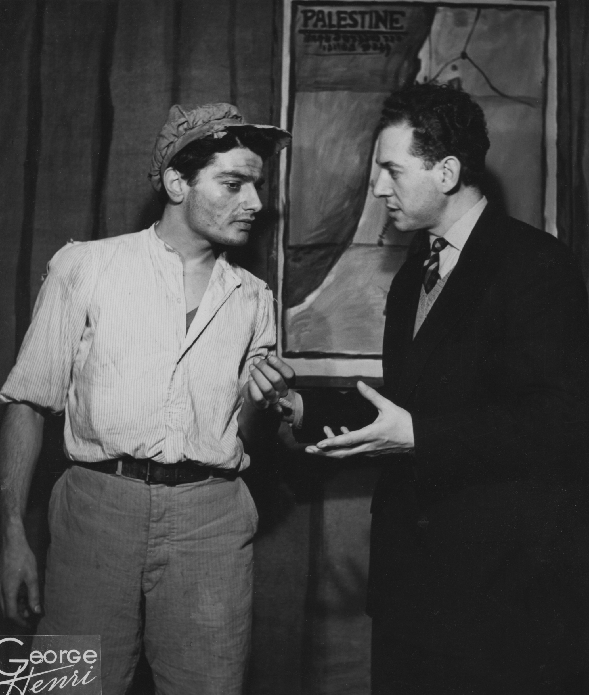

Sa silhouette et sa voix vous sont familières, surtout si vous êtes un admirateur du cinéma des années 1980. Charles Denner, cet artiste comédien fut à l’affiche de trente-six pièces et quarante-huit films. Il joua avec les plus grands : Jean-Paul Belmondo, Gérard Philipe, Lino Ventura, pour des réalisateurs de taille : Alain Jessua, Claude Lelouch, François Truffaut, Costa Gavras… L’acolyte de Belmondo dans Peur sur la ville, l’Homme qui aimait les femmes, pour Truffaut, c’était lui. EDITIONS PRIX Acheter